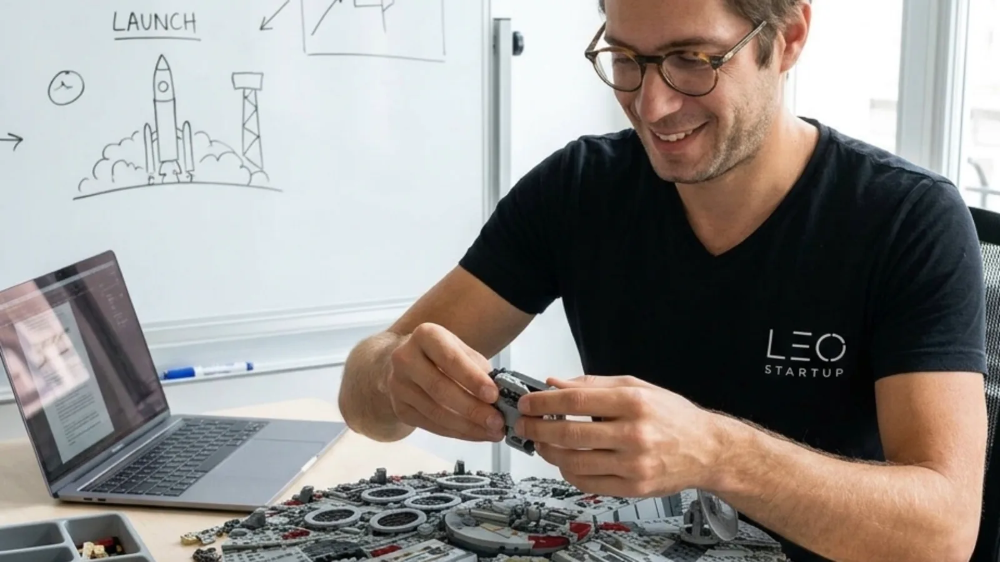
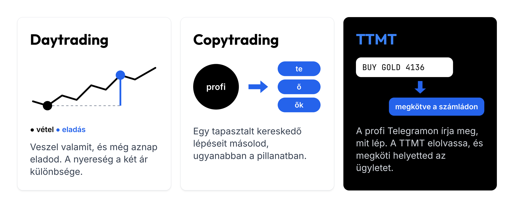
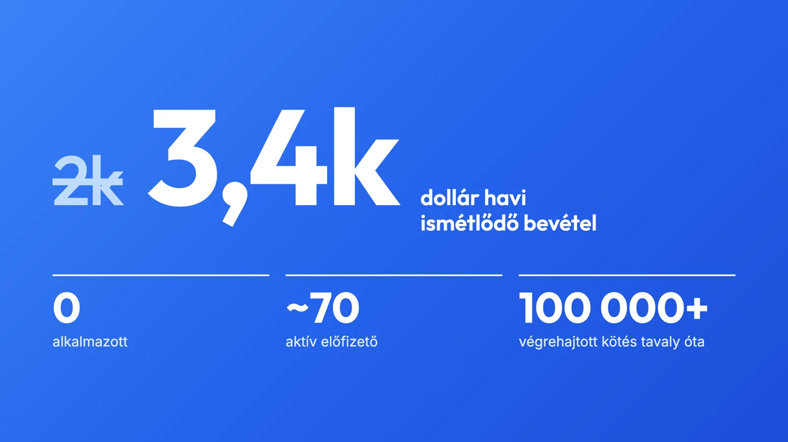
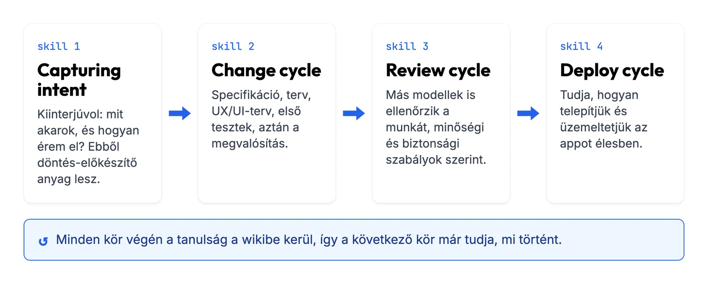
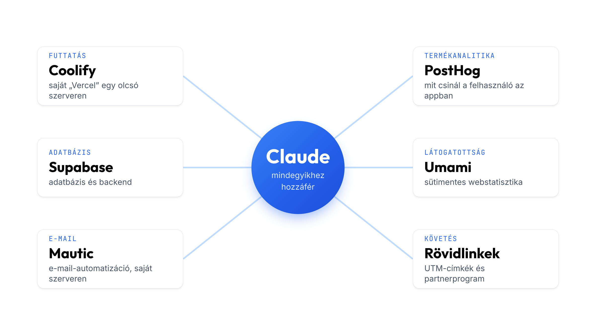
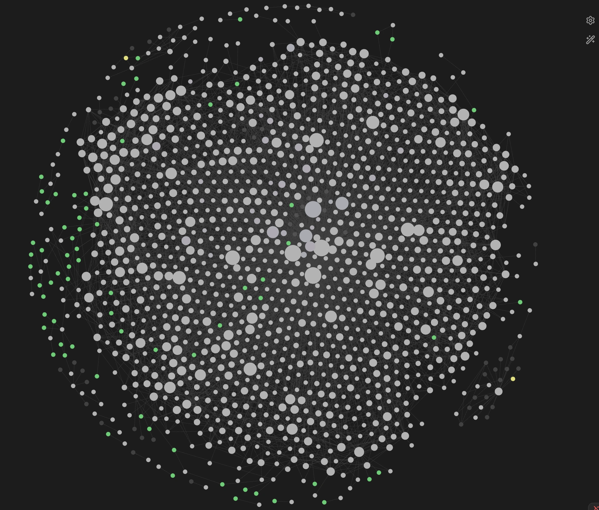
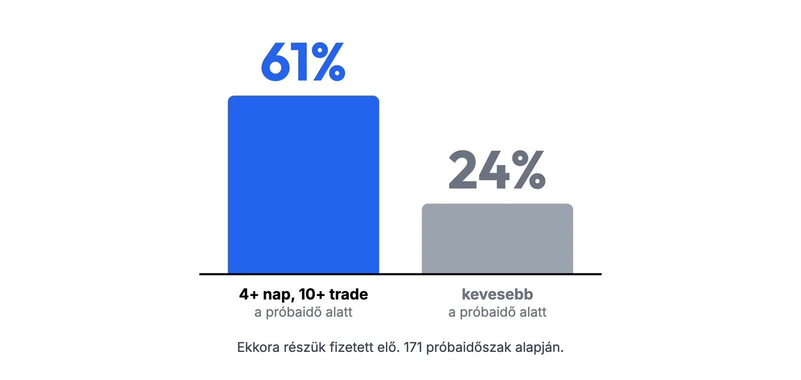
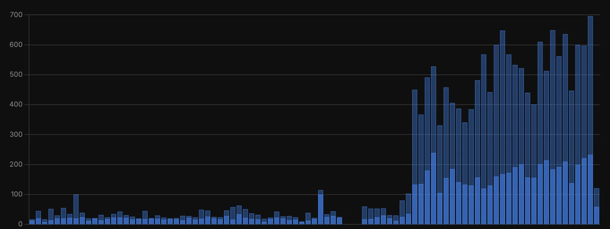
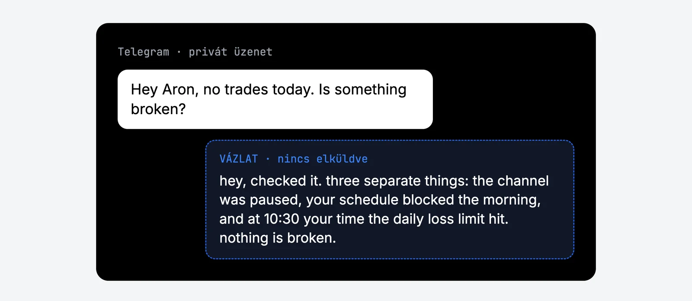

Szétszedő és összerakó vagyok. Az első szétszedésem nagyjából nyolcéves koromban volt: apa hazahozott egy méregdrága, LCD-s számítógépet, ami estére már nem működött. Azóta rengeteg mindent szétszedtem, de sok mindent össze is raktam. Nemzetközi lapoknak segítettem megérteni, mi történik Magyarországon. A haverjaimmal avantgárd divatmárkát alapítottunk. Ültem egy színpadon Törőcsik Marival és Varnus Xavérral, építettem a Bánkitó Fesztivált és az Aurórát, besegítek a családi borászatba, és 30 fölött elkezdtem zongorázni tanulni.
Az eddigi legnagyobb összerakásom az első startupom, az Égboltkép volt. Szerepeltünk a Cápák között műsorban, Balogh Petya is beszállt, a cég öt országban működött, nagy csapattal és sokmilliós tőkével. Aztán a kezdő vállalkozók összes hibáját elkövettem, a cég pedig csődbe ment. Hatalmas adósság maradt utána egy intézményi befektető felé. Akkor azt mondtam, tíz évig biztosan nem vállalkozom (és szerintem a családtagjaim is így gondolták :D). Persze nem bírtam nyugton maradni.
Mit építek most?
A mostani cégem a TTMT, ami daytradereknek segít: ha egy kereskedő a Telegram-csatornáján kereskedési jelzést küld („vedd az aranyat"), az app elolvassa, és megköti az ügyletet a felhasználó brókerszámláján. Ez másolt kereskedés, angolul copytrading.

Amikor az idei Service Design Day-re leadtam az erről szóló előadásom címét (2k dollár MRR, nulla alkalmazott. Mit csinál helyettem az AI?), a cég havi 2000 dollár előfizetői bevételt hozott (angol rövidítéssel MRR, monthly recurring revenue). Ma 3400 dollárnál tart. Közel hetven aktív előfizetőm van, és tavaly óta az app több mint százezer kötést hajtott végre a brókerszámlákon. Alkalmazottam nincs, sőt, igazából én is csak az utóbbi időben kezdtem félállásban a saját vállalkozásomnak dolgozni.

Ez a cikk arról szól, hogyan csinálom mindezt egyedül.
Mit jelent az, hogy AI-first?
A GPT-3.5 megjelenésével beköszöntött az ötletemberek kora. Én akkor úgy éreztem, végre szupererőt kaptam. Az előző cégem buktája után egy dolgot biztosan tudtam: ezúttal lassan, organikusan és komolyabb rizikó nélkül akarok építkezni. Éjszakánként, hétvégente dolgoztam, nem akartam kockázatot vállalni. El kellett férnie a vállalkozásépítésnek a munka-család duó mellé. Ezt csak úgy tudtam elérni, ha nem fizetek alkalmazottat és lehetőleg én sem dolgozom túl sokat 😅
AI-first cégnek azt tartom, ahol az AI minden területen beépül a vállalkozás DNS-ébe. Nálam a szoftverfejlesztésben, a UX-kutatásban és designban, az ügyfélszerzésben, a pénzügyekben és a community managementben is AI agentek végzik a meló nagy részét.
Hogyan fejlesztek?
Az AI egyik alapproblémája, hogy nem determinisztikus: ugyanarra a feladatra tízből tízszer más eredményt ad. Ezt úgy lehet kordában tartani, ha a lehető legrészletesebben leírod neki, hogyan dolgozol, milyen szabályokat kell betartani a fejlesztési folyamatban. Ebben semmi új nincs. Az ágensekkel dolgozó fejlesztés ugyanazokat a módszertanokat követi, amelyeket a szoftverfejlesztők évtizedek óta használnak. A feladat „csak” annyi, hogy ezeket az iskolákat hogyan lehet az agentic coding világába átemelni.
Nálam minden új funkció négy lépésen megy át, és mindegyik lépéshez saját skill tartozik. A skill egy újrahasznosítható utasításcsomag, amit a Claude a megfelelő pillanatban betölt.

Capturing intent. Ez a skill először leinterjúvol engem. Felteszi a kritikus kérdéseket: mit akarok, és hogyan akarom elérni. Ebből egy döntés előkészítő anyag lesz.
Change cycle. Az anyagból specifikáció, terv és UX/UI-terv készül, lefutnak az első tesztek, aztán jön a megvalósítás.
Review cycle. Alapvetően Claude-dal dolgozom, de itt más modellek is beszállnak, és ellenőrzik a munkáját. Ez a ciklus szigorú minőségi, biztonsági policyket követve vizsgálja meg az előző agentek munkáját.
Deploy cycle. Ez a skill pontosan tudja, hogyan telepítjük és üzemeltetjük az appot éles környezetben.
Ha kíváncsi vagy a skilljeimre, a github profilomon megtalálod ezeket.
Milyen stacken fut a szoftver?
Ha egyedül és pénz nélkül építesz céget, ez az egyik legfontosabb kérdés. Hiszek a nyílt forráskódú szoftverekben, amelyeket a saját szervereden futtatsz, bár az elmúlt tíz évben ez többször meg is bosszulta magát. Ezek az eszközök nagyszerűek, de gyakran hegeszteni kell őket, és az üzemeltetésük is sok energiát visz el. Hat eszközt használok a legfontosabb területeken.
Coolify. Egy magyar fejlesztő (Bácsai András) tartja karban ezt az open source csodát. Úgy kell elképzelni, mint egy saját szerveren futó, ingyenes Vercelt. Egy Ubuntu szerverre telepíted, és utána Docker-konténerekben futtatsz rajta appot, adatbázist, backendet, frontendet, weboldalakat, air fryert, hajszárítót. Kezdetben ez havi tíz dollárból simán kijön.
Supabase. Ez adja az adatbázist és a backend egy részét. Itt tudatos döntést hoztam. 2026-ban nagyon könnyű elhinni, hogy mindent házon belül, egyedi fejlesztéssel kell megoldani, csakhogy ennek ára van: ha valami eltörik, azt is neked kell kezelned, és amikor kézműves adatbázist debuggolsz, akkor az ügyfélszerzéstől veszed el az energiákat. Ezért a peace of mindért én havi néhányszáz dollárt fizetek a Supabase-nek.
Mautic. A kedvencem. Minden marketingesnek ajánlom, aki kisebb keretből akar komoly e-mail automatizációt. Nyílt forráskódú e-mail-marketing szoftver, ami szintén elfut egy öt-tíz dolláros szerveren vagy a Coolify-on belül. Lehet százezer e-mail-címed úgy, hogy közben nem fizetsz érte vagyonokat a HubSpotnak, vagy az ActiveCampaign-nek. Ugyanúgy követed benne a kontaktokat, és tetszőlegesen bonyolult automata email kampányokat rakhatsz össze.
PostHog. Termékanalitikai szoftver. Képernyőfelvételt készít, rögzíti, mi történik az appodon belül, logokat tárol. A Claude ezután tudja használni az itt összegyűlő infókat.
Umami. Saját szerveren futó Google Analytics. Sütik nélkül működik, ezért az EU-ban is viszonylag sok adatot gyűjt a látogatókról.
Saját rövidlinkrendszer. Ezen keresztül működik az UTM-címkézés és az affiliate rendszer.
A fentiek mindegyikéhez hozzáfér a Claude. Ha el kell döntenem, melyik funkciót fejlesszem, belép a Coolify-ra, megkérdezi az Umamitól, hol esnek ki a látogatók a tölcsérből, és ebből javaslatot készít.

Hol lakik a cégben keletkező tudás?
Andrej Karpathy LLM-wiki ötletét használom. Ez egymásra hivatkozó szöveges fájlok gyűjteménye, amelyet a világ nagy része kóddokumentációra használ: ha a kód megváltozik, a változásnak maradjon tartós nyoma, amit ember is el tud olvasni.

Nekem két ilyen wikim van, egy a kódhoz és egy a céghez. A céges wikibe kerülnek a megbeszélések jegyzetei, a marketinganyagok és a versenytárselemzések. Rengeteg interjút készítek a felhasználóimmal, mindet rögzítem, az átirat pedig szintén bekerül a wikibe.
Amikor marketinget csinálok vagy fejlesztek, a legfontosabb feladatom az, hogy a Claude hiteles és jól összerakott kontextust kapjon. Ha azon dolgozom, hogyan előzzünk meg egy versenytársat a Google-találatokban, a Claude abból a kutatásból indul ki, amit korábban már elvégeztem: ki mit csinál, miért, és milyen funkciói vannak. Amit egyszer megtanultam, azt nem kell újra kitalálni. A céges wikitől azt is megkérdezhetem, mi a felhasználóim leggyakoribb fájdalompontja. Ha holnap azon gondolkodom, merre fejlesszek, ez lesz a legfontosabb input.
Mikor fizetek hirdetésért?
Az alapelvem az, hogy előbb bebizonyítom, van-e értelme a terméknek (product market fit), és csak utána fizetek hirdetésért. Ezért minden, amit csinálok, alulról építkezik.
Ehhez az AARRR-modellt használom, amelynek mutatóit a hangzásuk miatt kalózmetrikáknak is hívják: acquisition, activation, retention, referral, revenue, vagyis megszerzés, aktiválás, megtartás, ajánlás és bevétel. A tölcsér tetején jönnek be az új felhasználók, az alján pedig azok vannak, akik maradnak és fizetnek. Én az aljáról kezdem. Amíg a vödör lyukas, hiába öntök bele több energiát és pénzt. Valamennyi érdeklődés már van, ezért először azon dolgozom, hogy a próbaidőszak után többen fizessenek elő, és a második, harmadik hónapban is maradjanak.
Ebben az AI-tól kapom a legtöbb segítséget. Kiderült például, hogy akik a próbaidőszak alatt legalább négy napon át kereskednek a szoftverrel, és legalább tíz tradejük van, azoknak 61 százaléka előfizet. Akik ezt nem érik el, azoknak csak 24 százaléka. Régebben napokig ültem volna a Google Analytics és a Data Studio fölött, hogy kiderítsem, hol van az igazi activation. Most ehhez a fenti hat eszköz adataira és a céges wikire volt szükség, a többi melót a Claude elvégezte.

Hogyan emailezek?
A HubSpot vagy az ActiveCampaign előtt egy marketinges órákat ül, mire összerak egy email szekvenciát. Én a Mautic felületét hónapok óta nem nyitottam meg. Ha onboarding szekvenciára van szükségem, megmondom a Claude-nak, hogy lépjen be a Mauticba, és írja meg az emaileket. Átnézem őket, a Claude feltölti a kampányt, és mehet. Ami marketingesként korábban napokba telt, most egy fél gondolat.
A leveleket a Claude írja, de az én stílusomban.
Tényleg évekig tart a SEO?
A legtöbben úgy gondolják, a SEO és a GEO (az AI-válaszokban való megjelenés) hónapok vagy évek munkája, ami egyszer majd megtérül. Én korábban egyáltalán nem foglalkoztam vele. Aztán egy nap alatt végigvittem a Claude-dal egy tizenhárom lépéses folyamatot, és a keresőből érkező kattintások négy hét alatt napi átlag 10–20 közöttről napi 200 fölé nőttek (igen, 10x).

Az eredményt elküldtem egy vállalkozó barátomnak, Andrisnak. Megkértem, hogy a Claude írja le, mit csinált az én Claude-om, és ezt a dokumentumot ő is megmutatta a saját közönségének. Abban a dokumentumban az én Claude-om magyarázza el a tiédnek, mit kell csinálni. Ha kéred, neked is elküldöm. Elég meta :D
Founder-led marketing vs. AI automatizálás. Mit szabad és mit nem?
A közösség és a velük való élő kapcsolat a vállalkozásom gerince. Az időm nagyjából hetven százalékát az ügyfeleimmel töltöm a community chatben, ahol közel százhúsz felhasználó van, és rengeteget beszélgetek velük egyenként is. Itt húztam meg a legfontosabb határt azzal kapcsolatban, hogy mit bízok az AI-ra, és mi marad fixen nálam.
A Claude minden bejövő üzenetet elolvas, megkeresi a wikiben és a kódban a releváns választ, és vázlatként elkészíti. A draft a Telegramban vár rám. Megnyitom, és ha tetszik, elküldöm, ha nem, átírom vagy törlöm. Természetesen úgy ír, mint én. Az ellenőrzés viszont egyelőre nálam marad, de a munka nagyját a Claude végzi.

Mit tudsz te is azonnal alkalmazni ebből?
Ezt mindenképp fogadd meg: gondold végig, milyen folyamatoknak kell működniük a cégedben, és írj belőlük skilleket, hogy az AI-asszisztensed és a kódoló agented ezeket követve dolgozzon.
Nézd meg, melyik szolgáltatást cserélheted le, vagy futtathatod a saját szervereden. Építs Karpathy-féle LLM-wikit. Mielőtt hirdetésre költenél, kezdd azokkal a csatornákkal, ahol organikusan azonnal aratni tudsz. Először a tölcsér alját javítsd, hogy aki kipróbálja a terméket, maradjon is.
Maradj elérhető az ügyfeleidnek. Chatbot helyett neked kell ott lenned, és neked kell válaszolnod. És mérj mindent, amit csak tudsz, mert ebből nemcsak te, hanem az AI agentek is dolgozni fognak.
A fenti gyakorlatokból kis sorozatot indítok a LinkedInen, tippekkel és trükkökkel. Ha hasznosnak találtad, kövess be: linkedin.com/in/lukacsaron.